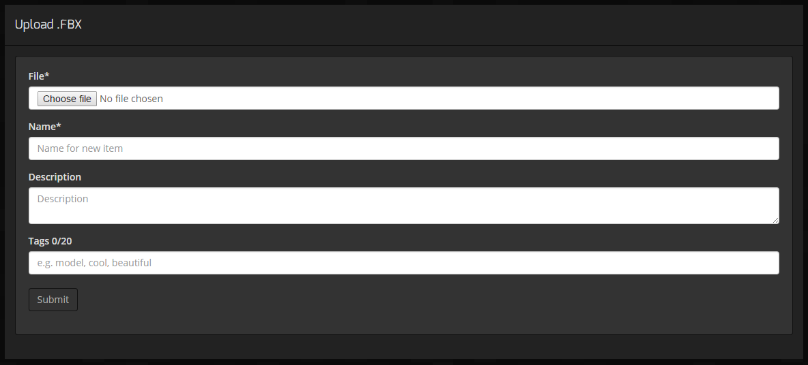
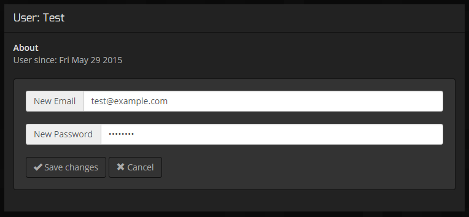
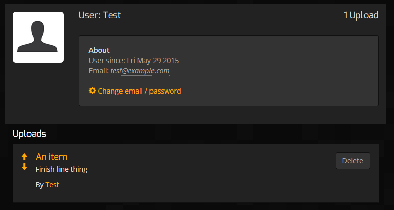
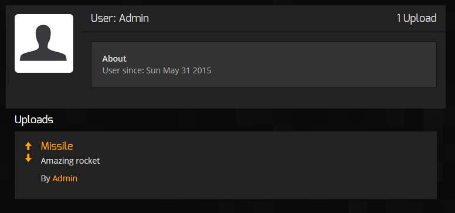

Alistair Wick AW12700
See: PixL, Hosted on DigitalOcean
Brief
This website is an online 3D model sharing system, somewhat similar in design to image sharing sites like Imgur. The site allows anonymous or registered users to upload 3D models in .FBX format, a widely supported export format. The models can have a searchable description and tag-set attached, and are sorted by their tags into categories called 'channels'.
Registered users can make comments on models on the site, and can delete their own models if they so choose (anonymously uploaded models can only be removed by an admin account). Admins can select a model for prominent display on the landing page, in the 'featured' section. This displays a full 3D view of the model to visitors.
The site utilizes a variety of client and server-side technologies, including WebGL & Three.js for rendering, and Node, Express and MongoDB at the back-end.
Server Implementation
Jade Templating
Before getting into the details of the server implementation, I should mention that the site has been converted to use Jade templating (dynamic html generation) throughout. This allows content to be inserted and adjusted on the pages with a great degree of freedom, using familiar JS-compatible code: for example, search results are displayed using a loop within the template document, and various controls are hidden or shown based on a user's access permissions.
File Upload and Processing
Files are uploaded using the form shown below. This uses the standard multipart/form format through HTTP POST, parsed by the 'multer' express middleware, which writes the file to an 'uploads' directory on the server. The name, description, tags and logged-in user (if any) are stored in the server's MongoDB database with a unique item ID, which is used to identify the model in HTTP requests. All of these fields are text-indexed, allowing full search functionality with relevance-sorting. A limit on the number of tags is enforced on both the client and server sides (as the client protection can be trivially bypassed).
FBX files hold mesh data including vertex and face definitions, and are a commonly used format for 3D data exchange. I knew when starting the project that an SDK for working with the files was freely available, which made it an even easier choice.
The FBX SDK provided by Autodesk provides python bindings, which allowed me to avoid dealing directly with native code and kept things relatively portable - although the library files included in my submission are linux-only, as I developed on Ubuntu. I used the python-shell package to run a conversion script server-side on any files which were uploaded, with the script being part of the three.js bundle.
I ran into a few issues with getting the FBX SDK working, however. Different versions of python dealt differently with normal / double- width encoded bytes, on top of the requirement for the x64 version of the SDK. The SDK files also had to be manually added to the python path for execution, and weren't picked up in Python's site-packages directory. This issues were frustrating to debug and ended up costing me time I wanted to spend on more extensive file support: in theory, the conversion script also supported materials, textures, and both .obj and .dae file formats, but I wasn't able to experiment with these.
In retrospect, I might have been better off relying on a more open file format, and possibly even writing a converter for myself.
User Signup and Login
User accounts were part of my vision of the site from the start, and were an important feature to focus on for the server-side of development. Accounts can be freely created with just a name, email, screen-name and password, and user information is stored on the database. Users can modify their account email and password after creation, and can delete the models they've uploaded. Administrators can remove any model from the site, and can also select models for featuring on the front page. These abilities are implemented through an AJAX API, with features hidden from users who can't access them (and protected by authentication on the server end).

The form shown above allows users to log in to the site.
Account editing:
Users see their own accounts differently (thanks to dynamic Jade templating). A logged-in user on her own account:
And viewing another user's account:
The user's login information is stored on the server's database using express' 'session' middleware, along with the connect-mongo storage engine. This allows users to stay online for as long as they're browsing the site by storing a small identifying cookie on their browser. This cookie is matched up to a transient database entry once the user is logged in, with the database entry holding their user id. All requests to the server pass through a function which extracts the user's information from the database for use in authentication or template rendering.
Comments
I implemented a simple commenting system for users to add thoughts on each others models. The client sends an AJAX request to the server, which appends a comment to the item's database document, then renders the comment html based on the comment template and returns this to the client, where it is dynamically added to the webpage. Future requests to the item page include the new comment(s) through the dynamic templating system.
Comments are labelled with the user who posted them - this cannot be faked, as it is authenticated on the server rather than sent with the request. While I had planned on nested comments, this would have required a more complex (and admittedly more robust) database schema which I ran out of time to develop, including a full comments collection (table) and relational links between comments. Note that instead I have used MongoDB's support for within-document (row) arrays; this places an upper limit on the number of comments per model, although this number is large. It may also have a minor impact on performance when adding new comments.
Search
The website's search functionality is robust, and is implemented through MongoDB's fast text-indexing feature. The name, author name, description and tags on a model are all searchable, with punctuation ignored and advanced features like phrase searching with "..." or exclusion with -....
The indexed search also provides a metadata 'ranking' field, allowing results to be sorted by decreasing relevance.
Conclusion
There's a huge amount I'd still like to add to the site, but this is already a late submission! I wish I'd been able to spend more time on it, but all things considered I'm proud of what I've developed. The site is fairly robust, displays the models front and center - which is always what I intended, albeit originally with a little more flash - and I've gained some valuable experience working with Node and MongoDB on a deployed web-server, which I enjoyed much more than I thought I would. NPM makes trying out new technologies a breeze, and the open-source community really has thought of everything. The way Jade integrated so beautifully with Express, JavaScript and MongoDB documents was also wonderful - having worked with PHP/MySQL in the past, I can appreciate how much easier things were this time.